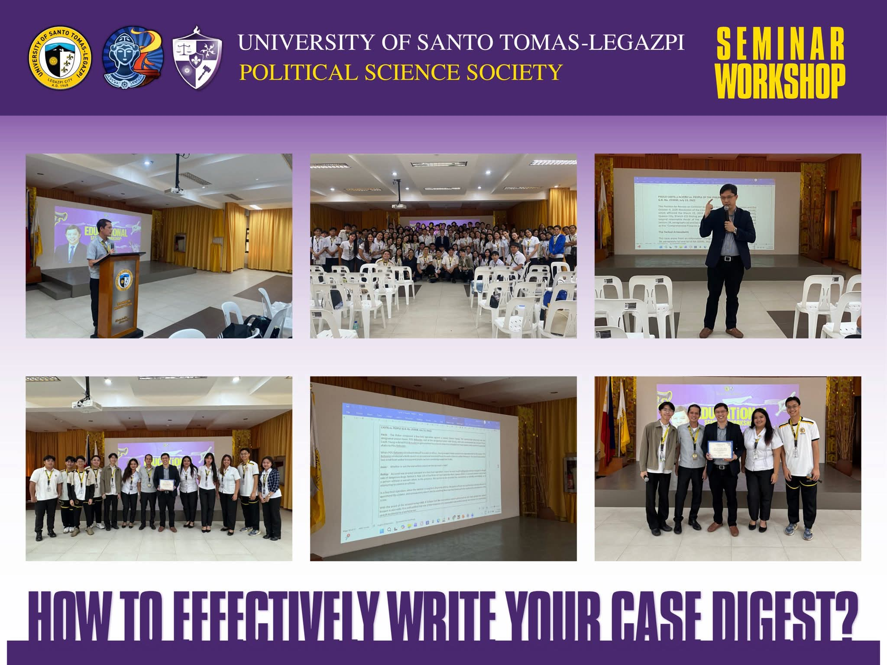
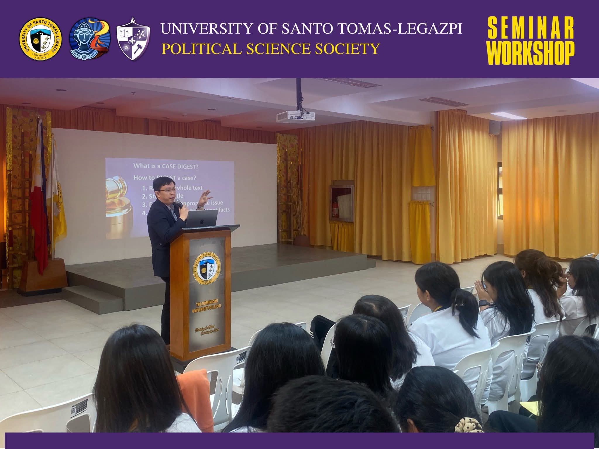
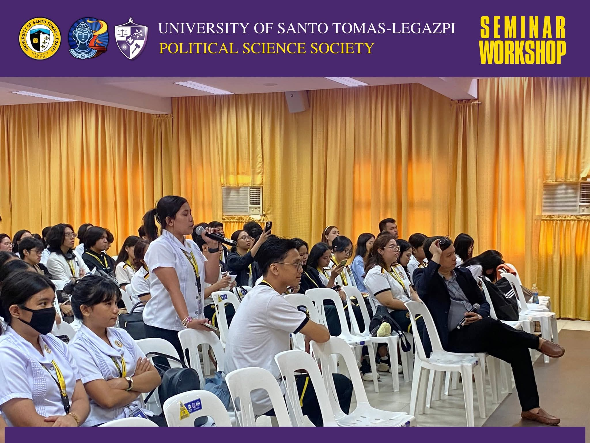

The Educational Seminar-Workshop: How to Effectively Write Your Case Digest was organized by the UST-Legazpi Political Science Society under the College of Arts, Sciences, and Education to enhance the academic and analytical skills of Political Science students. Anchored on the theme, “Mastering the Art of Case Digest Writing: Enhancing Critical Thinking and Legal Writing,” the seminar aimed to strengthen students’ abilities in legal reading, critical analysis, and case digest writing, essential competencies in the fields of law and political science.
The activity featured Atty. Leandro M. Millano, Dean of the UST-L College of Law, as the guest speaker, who shared practical techniques, insights, and strategies in effectively writing case digests. Through interactive discussions and hands-on exercises, participants were able to apply their learnings and deepen their understanding of jurisprudence and legal analysis. The seminar successfully provided students with valuable knowledge and experience that contributed to their academic growth and future professional pursuits.

Image 1. The students are actively listening to Atty. Milano’s talk.

Image 2. Ms. Bejer participating in the formal discussion.